채권시장의 VIX — MOVE 지수 읽는 법¶
주식 하는 사람은 VIX를 봅니다. 시장이 얼마나 겁먹었는지를 한 숫자로 보여주니까요. 그런데 정작 세상의 거의 모든 가격을 움직이는 시장에는 따로 공포 게이지가 있습니다. 금리, 정확히는 미 국채 시장이에요.
그 게이지의 이름이 MOVE 지수입니다. 주식의 VIX가 "주가가 얼마나 출렁일까"를 재듯, MOVE는 "금리가 얼마나 출렁일까"를 잽니다. 흔히 채권판 VIX라고 부르죠.
그리고 채권시장은 종종 주식보다 먼저, 더 정직하게 겁을 먹습니다. 그래서 MOVE를 읽을 줄 알면 시장의 스트레스를 한 발 앞서 감지할 수 있어요.
30초 요약¶
- MOVE = 채권판 VIX. 미 국채 옵션의 내재변동성으로, 시장이 예상하는 금리의 출렁임을 잽니다. 1988년부터 존재.
- 단위가 %가 아니라 bp입니다. VIX는 주가 변동성을 %로, MOVE는 금리 변동성을 베이시스포인트(bp)로 표현해요. 이게 첫 번째 함정.
- 곡선 전체를 봅니다. 2·5·10·30년 국채 옵션을 섞되, 10년물에 40% 비중(나머지 각 20%). 장기금리 흐름이 핵심이라는 뜻.
- 레벨 감: 대략 80 미만 평온 · 80~120 정상 · 120~160 스트레스 · 160 초과 발작. 현재는 약 75로 평온한 편.
- 역사적 발작: 2008 리먼 ~264, 2020 코로나 ~164, 2023 SVB 사태 ~200. 200을 넘긴 건 손에 꼽습니다.
- VIX와 갈라질 때가 신호. 주식은 잠잠한데 MOVE만 튀면, 채권시장이 금리·Fed 리스크를 먼저 냄새 맡은 것일 수 있습니다.
1. MOVE가 뭔가 — 채권판 VIX¶
변동성 Skew 글에서 VIX를 다뤘습니다. VIX는 S&P500 옵션 가격에서 뽑아낸 주식시장의 예상 변동성이죠. 시장이 겁먹으면 옵션(보험)이 비싸지고, 그 비싸진 정도가 VIX로 나타납니다.
MOVE는 정확히 같은 아이디어를 채권에 적용한 겁니다.
MOVE = 미 국채 옵션 가격에서 뽑아낸 금리의 예상 변동성
국채 금리가 앞으로 크게 출렁일 것 같으면, 국채 옵션이 비싸집니다. 그 비싸진 정도가 MOVE예요. 그래서 MOVE가 높다는 건 채권시장이 "금리가 어디로 튈지 모르겠다"며 긴장하고 있다는 뜻입니다.
정식 이름은 ICE BofA MOVE Index — 원래 메릴린치가 만든 "Merrill Option Volatility Estimate"의 약자에서 왔습니다. VIX가 주식 공포의 대표 지표이듯, MOVE는 채권 공포의 대표 지표입니다.
2. 첫 번째 함정 — 단위가 %가 아니라 bp다¶
VIX와 MOVE의 가장 큰 차이는 단위입니다. 이걸 모르면 숫자를 잘못 읽어요.
- VIX는 주가 변동성을 %로 표현합니다. VIX 20 = 시장이 S&P500의 연 변동성을 약 20%로 본다는 뜻.
- MOVE는 금리 변동성을 bp(베이시스포인트)로 표현합니다. 주가는 %로 움직이지만, 금리는 "4.2% → 4.3%"처럼 bp로 움직이니까요.
MOVE 숫자는 시장이 예상하는 연율화된 금리 변동폭(bp)입니다. 이걸 실제 체감으로 바꾸려면 한 달치로 환산하면 됩니다.
MOVE 100 → 10년물 금리가 한 달에 약 29bp 정도 움직일 거라고 시장이 본다는 뜻
MOVE 75 (현재) → 한 달에 약 22bp

즉 MOVE가 낮으면 "금리가 얌전할 것", 높으면 "금리가 크게 흔들릴 것"이라고 시장이 베팅하는 겁니다. 방향이 아니라 폭을 보는 지표라는 점도 VIX와 똑같아요 — 오르든 내리든 크게 움직일 것 같으면 올라갑니다.
bp를 월 움직임으로 바꾸는 계산
MOVE = 연율화된 금리 변동성 (bp)
1개월 예상 변동폭 ≈ MOVE ÷ √12
MOVE 100 → 100 ÷ 3.46 ≈ 29bp / 월
MOVE 75 → 75 ÷ 3.46 ≈ 22bp / 월√12로 나누는 건 연간 변동성을 월간으로 환산하는 표준 방법입니다 (변동성은 시간의 제곱근에 비례). VIX를 월 움직임으로 바꿀 때 VIX ÷ √12 를 쓰는 것과 똑같은 원리예요.
3. 한 종목이 아니라 곡선 전체를 본다¶
VIX는 S&P500 하나를 봅니다. MOVE는 다릅니다 — 국채는 만기별로 금리가 다르고(수익률 곡선), MOVE는 그 곡선 전체의 변동성을 섞어서 봅니다.
구체적으로 2년·5년·10년·30년 국채 금리 옵션의 변동성을 가중평균합니다. 비중이 핵심이에요.
| 만기 | 비중 |
|---|---|
| 2년 | 20% |
| 5년 | 20% |
| 10년 | 40% |
| 30년 | 20% |

10년물에 40%가 실려 있습니다. 10년 국채 금리가 주택담보대출·회사채·주식 밸류에이션까지 세상의 기준금리 역할을 하기 때문이에요. MOVE는 "곡선 전체"를 보되 사실상 10년물 변동성에 무게중심이 있는 지표입니다.
4. MOVE 레벨 읽는 법¶
절대 수치 자체는 감이 안 오니, 구간으로 외워두면 편합니다.

| MOVE | 상태 |
|---|---|
| < 80 | 평온 — 금리가 얌전 |
| 80 ~ 120 | 정상 |
| 120 ~ 160 | 스트레스 — 채권시장 긴장 |
| > 160 | 발작 — 위기 국면 |
현재(2026년 9월)는 약 75로 평온 구간입니다.
역사적으로 MOVE가 200을 넘긴 건 손에 꼽습니다. 그때가 어떤 시기였는지 보면 이 지표의 의미가 분명해져요.
- 2008년 10월 — 리먼 파산: 약 264 (역대 최고 수준)
- 2020년 3월 — 코로나 패닉: 약 164 (국채시장 유동성이 순간 마비된 시기)
- 2023년 3월 — SVB·크레디트스위스 사태: 약 200 (은행 위기)
세 번 다 금융시스템이 흔들린 순간입니다. MOVE가 160을 넘으면 그건 단순한 조정이 아니라 채권시장 배관 어딘가가 삐걱대고 있다는 신호예요.
5. VIX와 갈라질 때가 진짜 신호다¶
MOVE와 VIX는 보통 같이 움직입니다 — 위기가 오면 둘 다 오르고, 잠잠하면 둘 다 내려요. 그러니 그냥 같이 움직일 때는 별 정보가 없습니다.
정보는 둘이 갈라질 때 나옵니다.
주식(VIX)은 잠잠한데 채권(MOVE)만 튄다 → 시장이 아직 주가 걱정은 안 하는데, 채권시장은 금리·Fed·인플레 리스크를 먼저 감지한 것일 수 있습니다. 채권이 먼저 겁먹는 전형적 패턴이에요.
채권(MOVE)은 잠잠한데 주식(VIX)만 튄다 → 순수하게 주식 쪽 이슈(실적·밸류에이션)일 가능성. 금리 시스템은 안정적이라는 뜻.

채권시장이 먼저 정직한 이유는 참여자 구성에 있습니다. 국채 시장은 은행·연기금·중앙은행·헤지펀드 같은 큰 손들이 실제 자금과 레버리지를 걸고 금리를 거래하는 곳이에요. 이들이 긴장하면 MOVE가 먼저 움직입니다.
그리고 이건 신용 스프레드 이야기와도 이어집니다. 금리 변동성(MOVE)이 커지면 위험한 회사의 자금 조달이 어려워지고, 신용 스프레드가 벌어지기 시작해요. MOVE → 신용 스프레드 → 주식의 순서로 스트레스가 전파되는 경우가 많습니다. 그래서 채권 변동성은 여러 위험 신호 중 가장 앞단에 있습니다.
이 전파는 데이터로도 눈에 보입니다. 홈 대시보드에서 MOVE 차트와 신용 분산(CCC−B) 차트를 나란히 놓고 보면, 채권 변동성이 튀는 시점과 바닥 등급 스프레드가 벌어지는 시점이 대체로 겹치는 걸 확인할 수 있어요. 두 지표 모두 매주 갱신되니 지금 상황을 직접 대조해 보세요.
6. 무엇을 볼 것인가¶
실전에서 챙길 것들.
- 레벨보다 방향과 갈라짐. MOVE가 75라는 사실보다, 오르고 있는지 그리고 VIX와 벌어지고 있는지가 더 많은 걸 말합니다.
- 160은 경보선. 이 위로 올라가면 단순 조정이 아니라 시스템 스트레스 신호로 보세요.
- MOVE는 방향이 아니라 폭입니다. "금리가 오른다/내린다"가 아니라 "금리가 크게 흔들린다"를 재는 지표예요. 방향은 다른 도구(FedWatch·수익률 곡선)로 봅니다.
- VIX·신용 스프레드와 함께. 세 지표가 같은 얘기를 하면 신뢰도가 높고, 갈라지면 그 자체가 정보입니다. 보통 채권 쪽(MOVE·신용)이 먼저 움직여요.
7. 정리¶
| 개념 | 핵심 |
|---|---|
| MOVE | 채권판 VIX. 미 국채 옵션의 내재변동성 |
| 단위 | %가 아니라 bp (금리 변동폭) — 숫자를 월 움직임으로 환산해 읽음 |
| 구성 | 2·5·10·30년 가중, 10년물 40% |
| 레벨 | <80 평온 · 80~120 정상 · 120~160 스트레스 · >160 발작 |
| 역사 | 2008 ~264 · 2020 ~164 · 2023 SVB ~200. 200 초과는 드묾 |
| 핵심 용법 | VIX와 갈라질 때. 채권이 먼저 겁먹는다 |
| 성격 | 방향이 아니라 폭. MOVE → 신용 → 주식 순으로 전파 |
기억할 한 가지: 세상의 기준금리는 미 국채 10년물이고, 그 금리가 얼마나 흔들릴지를 한 숫자로 보여주는 게 MOVE입니다. 주식만 보는 사람은 폭풍이 와서야 알지만, 채권 변동성을 같이 보는 사람은 바람의 방향이 바뀌는 순간을 조금 더 일찍 느낄 수 있어요.
관련: 변동성 Skew | 신용 스프레드를 지표로 읽기 | VIX 기간구조
출처와 표기¶
MOVE 지수의 정의·가중(2/5/10/30 = 20/20/40/20)·단위는 ICE BofA 지수 방법론과 공개 자료를, 역사적 레벨(2008 ~264, 2020 ~164, 2023 SVB ~200)과 현재값(~75, 2026년 9월 초)은 다수 시장 자료를 근거로 했습니다.
MOVE Index는 ICE Data Indices의 상표이며, 본문은 지표를 지칭할 목적으로만 사용했습니다. VIX는 Cboe의 상표입니다.
용어 설명¶
- MOVE 지수 — 미 국채 옵션의 내재변동성으로 본 채권시장 예상 변동성. 채권판 VIX
- VIX — S&P500 옵션의 내재변동성으로 본 주식시장 예상 변동성
- 내재변동성 (Implied Volatility) — 옵션 가격에 반영된, 시장이 예상하는 미래 변동폭
- bp (베이시스포인트) — 0.01%포인트. 금리를 재는 단위 (100bp = 1%p)
- 수익률 곡선 (Yield Curve) — 만기별 국채 금리를 이은 곡선
- 연율화 (Annualized) — 변동성을 1년 기준으로 환산한 값. 월 환산은 √12로 나눔